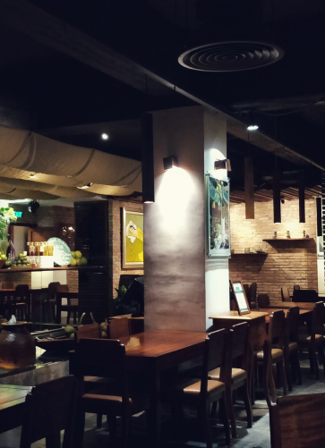
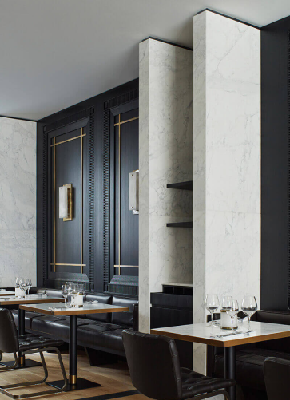
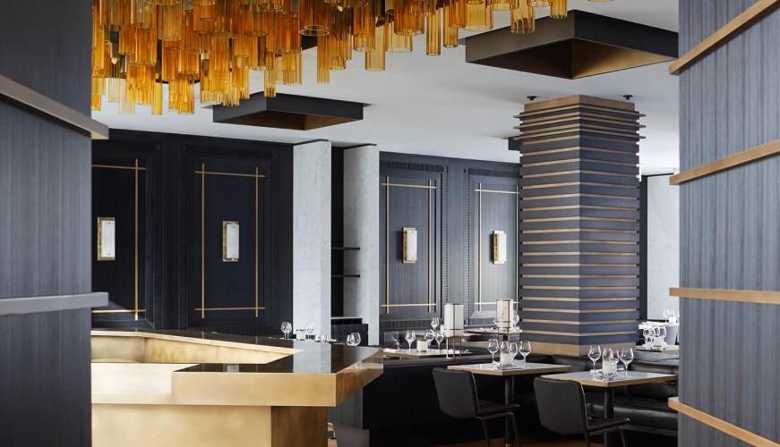
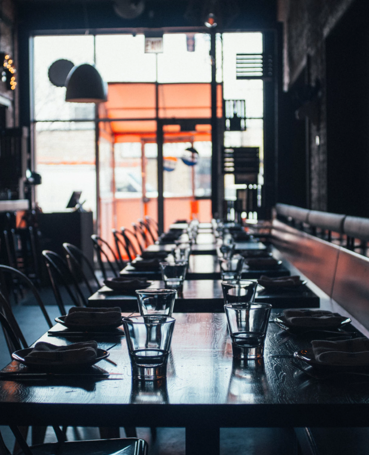

Un exemple d'affichage du nom de la publication sur le site
La Philosophie
La Philosophie Edern
001

A deux pas de l’avenue des Champs-Elysées, le chef Jean-Edern Hurstel ouvre EDERN. Une table bousculant les codes de la gastronomie. Où l’excellence rime avec l’impertinence et l’esprit festif. Une cuisine d’émotion, respectueuse de la saisonnalité, plaisant aux clients avant de plaire aux cuisiniers.
002

A la table d’EDERN, les tomates cerises choisies sont à l’ancienne, le pain de campagne croustillant signé Frédéric Lalos, des gages d’authenticité. Les poissons de ligne sélectionnés par Maison Nordique viennent accompagner les recettes classiques. Quant aux viandes, toutes françaises, place au gourmand à l’instar du quasi de veau de lait et de l’épaule d’agneau de lait. Dans le même esprit festif, la carte des champagnes vise l’excellence et le bar d’EDERN sort les shakers et réalise les grands classiques du cocktail.
Chef
De l’Amourbren Cuisine
Jean-Edern Hurstel s’est dirigé vers la cuisine par passion. Un péché de gourmandise
pour ce chef issu d’une famille de 7 enfants, qui le conduira directement chez les étoilés.
Apprenti à Genève du chef Claude Legras, « son deuxième papa » au restaurant du Parc des Eaux-Vives,
il gravit les marches une à une.
Chez Lucas Carton à Paris, il apprend aux côtés d’Alain Senderens l’excellence et le mariage des saveurs. D’Alain Passard à l’Arpège (3 étoiles), il gagne le respect du produit, l’art de la cuisson et des bons accords.
Chez Lucas Carton à Paris, il apprend aux côtés d’Alain Senderens l’excellence et le mariage des saveurs. D’Alain Passard à l’Arpège (3 étoiles), il gagne le respect du produit, l’art de la cuisson et des bons accords.
Victoires dans des concours importants
-
2019 Bocuse d'OrPremière place
-
2018 La Coupe du Monde de la PatisserieDeuxième place
-
2018 Global Chef Challenge «GCC»Première place
-
2018 Global Chef Challenge «GCC»Première place
-
2018 Global Chef Challenge «GCC»Première place
La fete
Les Nuits d’Edern
005

Passé l’escalier sculptural et béton, Edern prolonge ses dîners au bar et lounge du sous-sol. Ambiance club. Et déconnexion programmée. De l’ambré des flacons aux photographies noir et blanc, des banquettes relaxantes à l’autre comptoir de bar, l’esprit est à la détente. Lumières design et tamisées, toujours flatteuses. Pour les amateurs, un Cigare Lounge marron glacé fait la pause parfaite d’après-dîner, et tous profitent des sets de Dj.
entreprise
Edern
006

Au 6, rue Arsène Houssaye (Paris 8ème), il y eut d’abord Citrus Etoile. A l’abri des
foules des Champs-Elysées, un immeuble d’angle cachant de strésors. Sublimé après 8 mois
de chantier, le nouvel espace se déploie maintenant sur 2 niveaux et 360 m² de surface.
Au premier, une salle principale faisant apparaître la pierre naturelle, et sous les anciens
plafonds, une verrière. Au sous-sol, un lounge et lieu de vie de jour comme de nuit.
007
Fête
Au 6, rue Arsène Houssaye (Paris 8ème), il y eut d’abord Citrus Etoile. A l’abri des
foules des Champs-Elysées, un immeuble d’angle cachant de strésors. Sublimé après 8 mois
de chantier, le nouvel espace se déploie maintenant sur 2 niveaux et 360 m² de surface.
Au premier, une salle principale faisant apparaître la pierre naturelle, et sous les anciens
plafonds, une verrière. Au sous-sol, un lounge et lieu de vie de jour comme de nuit.
008
Fête
Au 6, rue Arsène Houssaye (Paris 8ème), il y eut d’abord Citrus Etoile. A l’abri des
foules des Champs-Elysées, un immeuble d’angle cachant de strésors. Sublimé après 8 mois
de chantier, le nouvel espace se déploie maintenant sur 2 niveaux et 360 m² de surface.
Au premier, une salle principale faisant apparaître la pierre naturelle, et sous les anciens
plafonds, une verrière. Au sous-sol, un lounge et lieu de vie de jour comme de nuit.
009
Fête
Au 6, rue Arsène Houssaye (Paris 8ème), il y eut d’abord Citrus Etoile. A l’abri des
foules des Champs-Elysées, un immeuble d’angle cachant de strésors. Sublimé après 8 mois
de chantier, le nouvel espace se déploie maintenant sur 2 niveaux et 360 m² de surface.
Au premier, une salle principale faisant apparaître la pierre naturelle, et sous les anciens
plafonds, une verrière. Au sous-sol, un lounge et lieu de vie de jour comme de nuit.
Menu
Une nourriture qui va vous surprendre
La presse
Un endroit
Un endroit
que tout le monde connait
Un exemple d'affichage du nom de la publication sur le site
Un exemple d'affichage du nom de la publication sur le site
Contact
Au coeur de Paris
Powered by googlemapsgen (pt) & Eurodisneyaanbiedingen (blog)
© Copyright ©2019 All rights
reserved | Edern-Restaurant